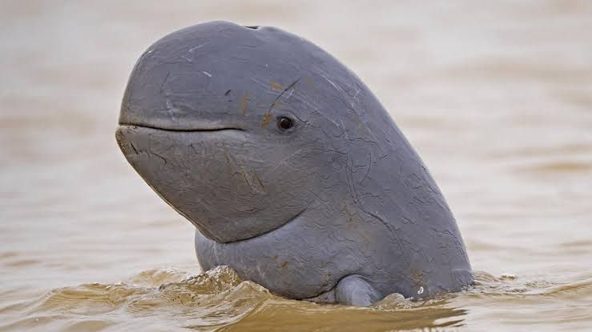
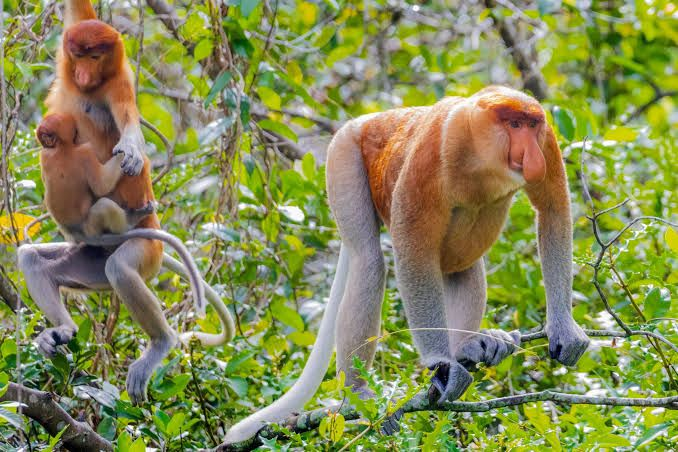

Pulau Kalimantan
Indonesia, sebagai salah satu negara dengan keanekaragaman hayati tertinggi di dunia, memiliki banyak spesies fauna yang unik dan endemik, terutama di pulau Kalimantan. Kalimantan, yang dikenal dengan hutan hujannya yang luas dan ekosistem yang kompleks, merupakan rumah bagi berbagai satwa langka yang hanya ditemukan di wilayah ini. Sayangnya, banyak dari spesies ini kini berada di ambang kepunahan akibat aktivitas manusia, seperti deforestasi, konversi lahan, dan perburuan ilegal.
Satwa-satwa langka di Kalimantan ini mencerminkan betapa kayanya biodiversitas Indonesia, namun juga menyoroti tantangan besar yang dihadapi dalam melindungi mereka. Upaya konservasi yang melibatkan perlindungan habitat, peningkatan kesadaran masyarakat, serta penegakan hukum terhadap perdagangan ilegal dan perburuan menjadi sangat penting untuk menjamin kelangsungan hidup mereka. Tanpa intervensi yang tepat, satwa-satwa langka ini berisiko kehilangan habitatnya dan akhirnya punah.
Berikut merupakan penjelasan singkat nama hewan dan habitatnya di pulau Kalimantan:
1. Kukang kalimantan

kalimantan (Nycticebus borneanus Lyon, 1906) adalah sejenis kukang yang menyebar
terbatas (endemik) di Pulau Kalimantan bagian tengah hingga baratdaya. Dideskripsi pertama kali
pada 1906, takson ini dahulu dianggap sebagai varian atau bagian dari kukang borneo (N.
menagensis atau N. coucang menagensis) hingga kajian pada 2012 memperlihatkannya
sebagai spesies yang valid.
Ciri-ciri Kukang Kalimantan:
Nycticebus borneanus memiliki pola pewarnaan wajah yang gelap kontras, dengan ujung atas
cincin gelap sekeliling mata yang umumnya berbentuk membundar atau kadang-kadang baur di
pinggiran atasnya. Tepi bawah cincin gelap itu tidak pernah melewati tulang pipi. Jalur
pucat di antara kedua matanya bervariasi lebarnya, pola atau bercak besar di ubun-ubun sering
membundar, atau kadang-kadang berbentuk pita, namun tidak pernah kabur tepi-tepinya.
Telinganya berambut panjang; dan pita pucat di depan telinganya lebar.
Panjang tubuh rata-rata adalah 260,1 mm kepala dan badan, dari 4 spesimen.
Sementara bobot tubuh jenis-jenis kukang di Kalimantan berkisar antara 265–610(-800)g, sebagaimana
tercatat dari berbagai spesimen di museum.
2. Pesut Mahakam

Pesut mahakam (Orcaella brevirostris) adalah sejenis hewan mamalia yang sering
disebut lumba-lumba air tawar yang berstatus terancam punah. Pesut ini dinamakan pesut
mahakam karena banyak ditemukan di perairan Sungai Mahakam, tetapi kalangan peneliti barat
lebih mengenal hewan ini dengan nama Irrwaakbarddy Dolphin. Pesut memiliki populasi global
sebanyak 6000 ekor, berdasarkan data tahun 2018 populasi hewan ini tinggal 80 ekor saja di
perairan sungai-sungai di Kalimantan dan menempati urutan tertinggi dari daftar
satwa Indonesia yang terancam punah.Namun populasi hewan ini justru mengalami
peningkatan di Kamboja. Hewan ini dibedakan dari sepupunya Pesut Australia menurut bentuk
tengkorak dan siripnya.Tidak seperti mamalia air lain yakni lumba-lumba dan paus yang hidup di laut,
pesut mahakam hidup di sungai-sungai daerah tropis. Populasi satwa langka yang dilindungi undang-undang ini
terutama terdapat pada tiga sungai besar di Asia Tenggara yakni Sungai Mahakam, Sungai
Mekong, dan Sungai Irrawaddy.
Ciri-ciri Pesut Mahakam:
Pesut mahakam mempunyai kepala berbentuk bulat (seperti umbi) dengan kedua matanya yang
kecil (mungkin merupakan adaptasi terhadap air yang berlumpur). Tubuh pesut berwarna abu-abu
sampai wulung tua, lebih pucat dibagian bawah serta tidak memiliki pola khas. Sirip punggungnya
kecil dan membundar di belakang pertengahan punggung. Dahinya tinggi dan berbentuk bundar,
tidak ada moncong seperti lumba-lumba lain. Sirip dadanya lebar membundar
Di Kalimantan, populasi hewan ini terus menyusut akibat habitatnya terganggu, terutama makin
sibuknya lalu-lintas perairan Sungai Mahakam, serta tingginya tingkat erosi dan pendangkalan
sungai akibat pengelolaan hutan di sekitarnya. Kelestarian Pesut mahakam juga diperkirakan
terancam akibat terbatasnya bahan makanan berupa udang dan ikan, karena harus bersaing
dengan para nelayan di sepanjang Sungai Mahakam.
3. Bekantan

Bekantan (Nasalis larvatus) adalah jenis monyet berhidung panjang dengan rambut berwarna
hitam kemerahan dan merupakan satu dari dua spesies dalam genus Arassy. Awan merupakan
hewan endemik pulau Kalimantan yang tersebar di hutan, rawa dan hutan pantai. Ciri utama yang
membedakan awan dari monyet lainnya adalah hidung panjang dan besar yang hanya ditemukan
di spesies jantan. Kampung Wisata awan Jadi Wisata Edukasi.
Ciri-ciri Bekantan:
Bekantan jantan berukuran lebih besar dari betina. Ukurannya dapat mencapai 75 cm dengan
berat mencapai 24 kg. Monyet betina berukuran 60 cm dengan berat 12 kg. Spesies ini juga
memiliki perut yang besar, sebagai hasil dari kebiasaan mengonsumsi makanannya.
Selain buahbuahan dan biji-bijian, bekantan memakan aneka daun-daunan, yang menghasilkan banyak gas
pada waktu dicerna. Ini mengakibatkan efek samping yang membuat perut bekantan jadi
membuncit.
Populasi bekantan di Kalimantan Selatan (Kalsel) yang merupakan satwa endemik pulau
Kalimantan meningkat populasinya 10 persen dari tahun 2019 sekitar 3.000 ekor menjadi sekitar
4.000 ekor pada tahun ini berdasarkan laporan Balai Konservasi Sumber Daya Alam (BKSDA).